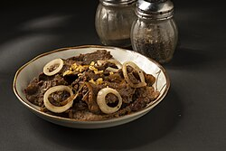

Bistek Tagalog
Beef slices cooked in soy sauce with lemon and onions. This is bistek tagalog.
Prep: 1 hour Cook: 40 mins

Ingredients
- 1 1/2 lbs beef sirloin thinly sliced
- 5 tablespoons soy sauce
- 4 pieces calamansi or 1 piece lemon
- 1/2 teaspoon ground black pepper
- 3 cloves garlic minced
- 3 pieces onion sliced into rings
- 4 tablespoons cooking oil
- 1 cup water
- 1 pinch salt
Instructions
- Marinate beef in soy sauce, lemon (or calamansi), and ground black pepper for at least 1 hour. Note: marinate overnight for best result
- Heat the cooking oil in a pan then pan-fry half of the onions until the texture becomes soft. Set aside
- Drain the marinade from the beef. Set it aside. Pan-fry the beef on the same pan where the onions were fried for 1 minute per side. Remove from the pan. Set aside
- Add more oil if needed. Saute garlic and remaining raw onions until onion softens.
- Pour the remaining marinade and water. Bring to a boil.
- Add beef. Cover the pan and simmer until meat is tender. Note: Add water as needed.
- Season with ground black pepper and salt as needed. Top with pan-fried onions.
- Transfer to a serving plate. Serve hot. Share and Enjoy!